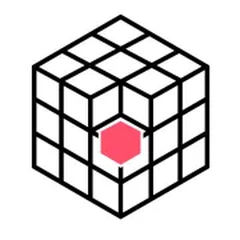
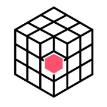

Subject
(thread reply)
Body

3 items need your approval, 6 replies waiting, 2 campaigns finished overnight.

SI Copy draft ready · CS Leadership V1 GW
Ready to launch · V2 SEO Agencies
GW
Ready to launch · V2 SEO Agencies
somethinginc.com · 3 active campaigns · onboarded 2026-01-04
| Campaign | Segment | Sent | Reply | Positive | Next QA | Status | |
|---|---|---|---|---|---|---|---|
|
Campaign #
|
live | › | |||||
|
CS Leadership V1
Draft · started 38 min ago
|
SEG9 · CS Leadership | — | — | — | — | awaiting copy approval | › |
ICP4 × SEG9 · drafted by Claude 38 min ago · 1,284 verified leads queued
VC-backed scale-ups with established CS function. Examples: Gainsight, Catalyst, Vitally, ChurnZero.
VP CS / Head of CS / Director of CX. 13 titles, ~1,402 fit companies in Discolike.
Mid-market SaaS CS leaders will respond to a 30-day-recovery playbook framed around silent at-risk signals — outperforming our V1 generic CS playbook by 1.5×.
Mid-market B2B SaaS Customer Success leaders sit at the intersection of two compounding pressures. Net-revenue-retention has overtaken new-logo growth as the board metric of record at most growth-stage SaaS companies. At the same time, CS teams have absorbed expansion-quota responsibility without commensurate budget or tooling…
The result is a buying persona who is simultaneously the most metric-accountable role on the GTM team and the most under-supported. They feel the gap between expectation and resources daily — and they read cold-email pitches through that lens.
| Rank | Pain | Value | Case study | Lead magnet | Score |
|---|---|---|---|---|---|
| ★ 1 | Silent at-risk accounts | 30-day recovery | Gainsight 4.2M | Playbook + audit | 0.94 |
| 2 | QBR cadence misses signals | Risk-scoring rubric | Catalyst 200 accounts | QBR rubric | 0.88 |
| 3 | Renewal forecast inaccuracy | Health-score model | Vitally 14 accounts | Model template | 0.82 |
A one-page audit framework run between annual QBRs to surface silently at-risk accounts before churn becomes irreversible.
"See what 4 of our last 7 CS retention wins hinged on — without scheduling a call."
"Send me your last 60 days of CS account-health data and I'll send back a one-page audit identifying your 5 highest-risk accounts and the day-14 recovery play that recovered $4.2M for Gainsight — within 48 hours, ungated."
Each email bridges to a distinct DEL · all 3 actively maintained in the bank
Started 8 minutes ago · running on container worker · ETA 14 minutes
PASS · No prior losing patterns matched for this segment × offer.
PASS · 0 leads overlap with last 60d sends to this workspace.
PASS · 3 distinct Active DELs cover {E1, E2, E3} for this front-end offer.
WARN · E2 mechanism activation slightly under benchmark; operator may proceed.
Mid-market SaaS CS leaders will respond to a 30-day-recovery playbook framed around silent at-risk signals — outperforming our V1 generic CS playbook by 1.5×.
After launch alert posts to Slack, this workspace's CC engine will auto-refresh. Long-term memory survives; ephemeral context is cleared so the next campaign starts fresh.
Lacey — pulling the audit now with your last 60-day churn signal pattern overlaid. Will send within the hour.
Quick note ahead of that: the SMB-cohort miss is almost always tied to the on-cycle review running on annualized signals when SMB churn cues are weekly. The audit surfaces the weekly cuts inline.
— Nick
Case studies · Deliverables · Intelligence · Voice profile · all searchable
| Name | Title | Company | Verified | List | ||
|---|---|---|---|---|---|---|
All campaigns across all workspaces · last 30 days
| Campaign | Workspace | Sent | Reply | Positive | Hypothesis | QA #4 |
|---|---|---|---|---|---|---|
A fresh CC session boots in ~3 seconds. Long-term memory + intelligence files persist. Ephemeral tool output not in memory is dropped.